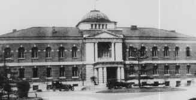
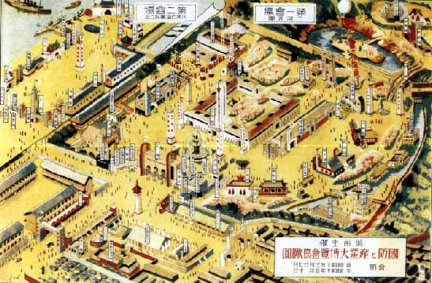
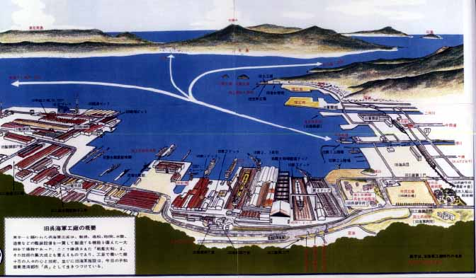

「軍都」呉の歴史
(1) 戦前の呉鎮守府と呉海軍工
呉浦が、平穏な村落から世界的な軍港へと変わっていったのは、1883年(明治16)に行なわれた海岸の調査によります。
呉は軍港に最適地であるとされ、横須賀についで二つめの海軍鎮守府を置くことが決まり、1889年(明治22)、呉海軍鎮守府が開庁し、同時に造船部が開設されました。

呉鎮守府
その歴史を少しふりかえってみましょう。
1899年(明治32) 呉における最初の軍艦(通報艦)「宮古」が建造される
1907年(明治40) 日本最初の装甲艦(巡洋艦)「筑波」が建造される
呉工廠製12インチ(約30cm)の、最初の国産主砲を搭載
これによって呉工廠は横須賀を抜いて日本一と呼ばれるようになる
1909年(明治42) 船体鋼材全部が国産品の巡洋艦「伊吹」が建造される
1911年(明治44) 当時世界最大の戦艦「安芸」が建造される
1915年(大正4) 世界初の3万トン級の戦艦「扶桑」が建造される
1920年(大正9) 世界初の16インチ(約40cm)主砲搭載の戦艦「長門」が建造される
1941年(昭和16) 世界初の18インチ(約46cm)主砲など、日本海軍の技術を
結集した巨大戦艦「大和」が建造される
戦前、日本には四つの海軍鎮守府と、その管轄下にある海軍工廠が存在し、戦艦･空母などは呉と横須賀で、巡洋艦は佐世保で、駆逐艦は佐世保と舞鶴で、潜水艦は呉と横須賀で造る生産態勢ができあがっていました。
その中でも、呉は瀬戸内海という波静かなところにあり、艦隊の訓練をする場所として適していたことから、呉海軍工廠では造船･造機･造兵･製鋼･礒装･検査･実験部など、機能強化が集中的に行なわれ、最新技術の導入が可能となりました。こうして新造艦艇の兵器と鋼鉄は、すべて呉から製造供給されるようになったのです。
呉の工員の数が他の三海軍工廠の合計を越えていった過程は、「日本で初めて造られるもの」から、「世界で初めて造られるもの」へと、その能力を高めた形で表れ、呉海軍工廠は「東洋一」といわれるほどでした。

呉博覧会
軍事都市･呉の特色としてこの他、海軍の幹部を養成する場所であったこと、燃料など軍需物資の補給基地であったこと、乗組員の休養･補給基地であったこと、広島の第五師団とともに海外出兵の基地であったこと、同時に軍内部で反戦運動も行なわれたこと、そして「東洋一の兵器工場」の陰では、劣悪な労働条件に抗して労働運動も起こり、大規模なストライキや米騒動が発生したこと、などが挙げられます。
呉が、空襲を受け、戦場にもなったり、原子爆弾を投下する候補地にもあげられていたのは、「東洋一の兵器工場」とともに、海外派兵のための出撃基地だったという背景があったからです。

入船山記念館作成ポスタ－「歴史の見える丘公園」からの呉軍港眺望図
「軍都呉の歴史関係年表」
１８８６（明１９） 第２海軍区軍港を呉港に定む
１８８９（明２２） 呉鎮守府閉庁．造船部、兵器部など設置
１８９４（明２７） 日清戦争
１８９７（明３０） 呉鉄道起工、造兵廠設置
１９０２（明３５） 呉市制をしく、全国で５４番目
１９０３（明３６） 造船、造兵をあわせ呉海軍工廠設置、呉線開通
１９０４（明３７） 日露戦争
１９１２（明４５） 海軍工廠のストライキ
１９１８（大７） シベリア出兵、海兵団出動
１９２０（大９） 呉海軍工廠広支廠開設
１９３１（昭６） 呉海軍航空隊開設、海軍軍縮で工員整理
１５年戦争（満州事変）開始
１９３４（昭９） 広第１１空廠設置
１９３７（昭１２） 日華事変、戦艦大和起工
１９４１（昭１６） 潜水艦基地隊開設、太平洋戦争開始
１９４３（昭１８） 呉市の人口４０万４千人で最高
１９４５（昭２０） 米軍機の呉空襲、５次の大空襲、８．６原爆投下、敗戦
米軍上陸、呉に進駐（９．２６）
１９５０（昭２５） 朝鮮戦争勃発、再軍備開始、旧軍港市転換法の公布
１９５４（昭２９） 海上自衛隊呉地方総監部を設置